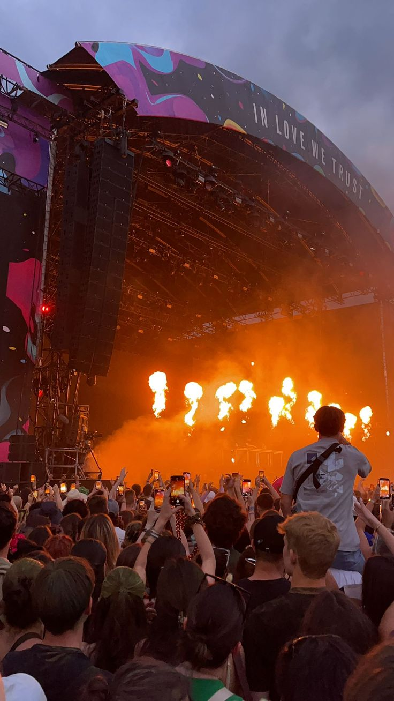
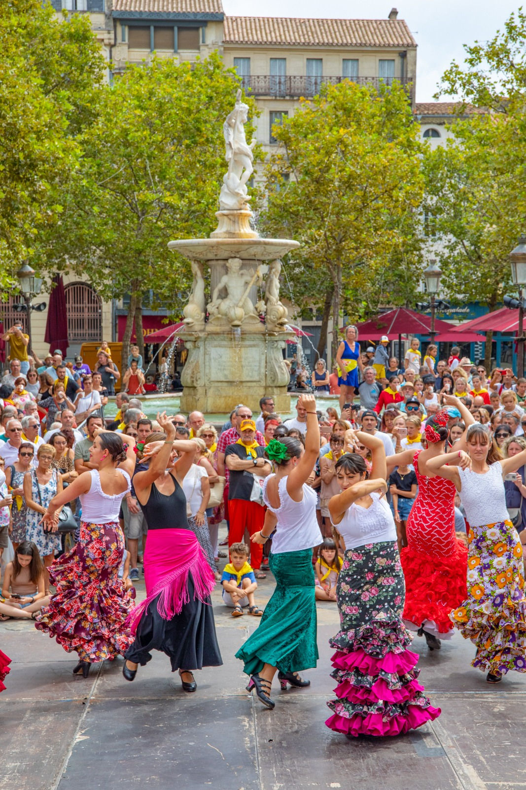
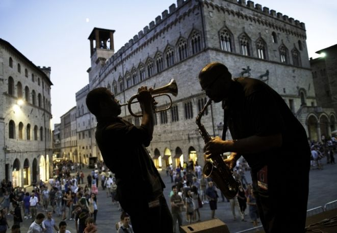
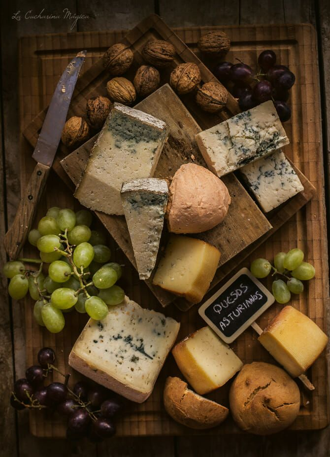

Cultura
20 Abril 2026
Romería de San Marcos
Celebración tradicional con música folk y gastronomía asturiana en el valle.
Ver evento →
Celebración tradicional con música folk y gastronomía asturiana en el valle.
Ver evento →
Grupos de danza folk asturiana se reúnen para celebrar las tradiciones del Principado.
Ver evento →
Espectáculo de música y fuego con artistas nacionales e internacionales al aire libre.
Ver evento →
Actuaciones de flamenco en vivo en la plaza mayor de Gijón con bailaoras de primer nivel.
Ver evento →
Festival de jazz al atardecer en el casco histórico de Avilés con músicos internacionales.
Ver evento →
Danzas y música tradicional asturiana con los Picos de Europa como espectacular telón de fondo.
Ver evento →
Concurso y degustación del cachopo más famoso de Asturias en el centro de Oviedo.
Ver evento →
Productos locales, sidra y gastronomía tradicional asturiana en la plaza del casco antiguo.
Ver evento →
Concurso entre restaurantes para elegir la mejor fabada tradicional de Asturias.
Ver evento →
Degustación y concurso del famoso queso asturiano en Arenas de Cabrales.
Ver evento →
Festival literario y cultural con autores nacionales e internacionales.
Ver evento →
Recreación histórica con artesanía, gastronomía y espectáculos medievales.
Ver evento →
Gran concierto de gaita asturiana en el Auditorio Príncipe Felipe con los mejores gaiteros del Principado.
Ver detalles →Recorrido por los mejores lllagares y sidrерías de Gijón para degustar la sidra natural asturiana.
Ver detalles →
Restaurantes de toda Asturias presentaron sus versiones del pote tradicional en este evento celebrado en Avilés.
Ver detalles →
Muestra de obras de artistas asturianos emergentes en el Museo de Bellas Artes de Asturias en Oviedo.
Ver detalles →
Representaciones de obras del Siglo de Oro español a cargo de compañías nacionales en el Teatro Jovellanos.
Ver detalles →
Encuentro literario con firmas de autores, presentaciones y actividades para fomentar la lectura en el Parque San Francisco.
Ver detalles →